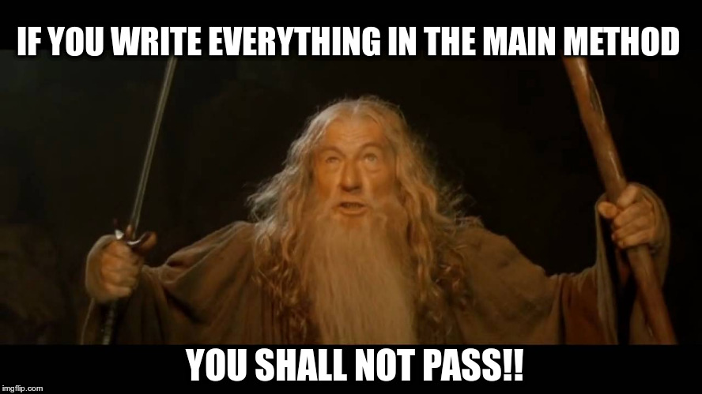
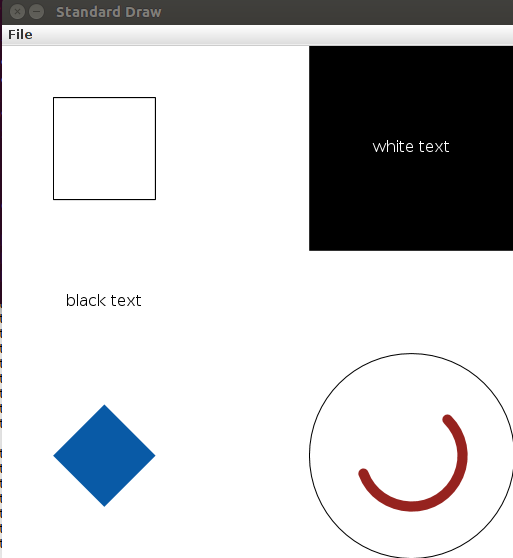

Aula Prática #04 - Programação Estruturada
(3 de Novembro)
Exercícios para submissão
Para efeitos da nota atribuída à resolução de exercícios ao longo do semestre, os exercícios que pode submeter desta aula são:
Prazo de submissão: 20 de Novembro (submeter no Mooshak de EDados)
É encorajado que vão falando com os docentes e outros colegas se tiverem dificuldades. No entanto, qualquer ajuda mais direta que tenham recebido de outros colegas deve ser reconhecida nos comentário do programa que submetem.
Depois do prazo os problemas continuarão disponíveis no Mooshak, mas as submissões não contarão para a sua nota.
Cada aula vale 10% da nota desta componente. Como existem 12 aulas com submissões, pode ter pontuação máxima mesmo sem ter feito tudo.
Para um problema contar tem acertar todos os testes (ou seja, ter accepted). Mesmo que resolva todos os problemas, o máximo numa aula é de 100%.
Para ter 100% bastará sempre resolver os exercícios do guião principal.
Exercício 1) Jogo do Galo
- Conselhos sobre como criar um programa.
Veja o vídeo e/ou leia cuidadosamente slides disponibilizados no Capítulo 2 - Sobre Programação Estruturada
Para acompanhar pode usar:
- Submissão para o Mooshak

Depois de garantir que percebeu bem todo o programa dado (em particular a maneira como foi generalizada a verificação das linhas) submeta o código dado para o Mooshak (o problema [ED004] Jogo do Galo está disponível no Volume 1).
Exercício 2) Jogo da Vida
O Jogo da Vida é talvez o mais conhecido autómato celular e foi criado para simular, através de regras simples e vai ser o tema do principal exercício desta aula prática. O objectivo é submeter com sucesso o problema [ED088] Jogo da Vida criando um código adequado e estruturado.
- Comece por ler o enunciado do problema, prestando especial atenção às regras que definem como é criada uma nova geração a partir do estado actual do jogo: [ED088] Jogo da Vida
- Depois de ler, experimente interagir um pouco com o jogo, para garantir que percebeu as regras:
- Vá por exemplo a este simulador: https://playgameoflife.com/.
- Experimente usar o botão Next para ir vendo como aparece cada nova geração (e verifique que percebeu as regras)
- Usando o botão Start pode ver as várias gerações a irem aparecendo sem ter de carregar num botão para cada nova geração (pode também usar o interface para mudar a velocidade das iterações)
- No "lexicon" pode ver outras formas de vida inciais (estados do tabuleiro) que dão origem resultados interessantes (carregando na figura consegue colocá-las no simulador)
- Para este problema vamos sugerir que use o seguinte esqueleto de código (que contém funções que deverá completar).
[Depois do código vem explicado um conjunto de passos para completar este exercício!]
/* -----------------------------------
Estruturas de Dados 2021/2022
Jogo da Vida [ED088]
----------------------------------- */
import java.util.Scanner;
// Classe para representar um jogo
class Game {
final char DEAD = '.'; // Constante que indica uma celula morta
final char ALIVE = 'O'; // Constante que indica uma celula viva
private int rows, cols; // Numero de linhas e colunas
private char m[][]; // Matriz para representar o estado do jogo
// Construtor: inicializa as variaveis tendo em conta a dimensao dada
Game(int r, int c) {
rows = r;
cols = c;
m = new char[r][c];
}
// Metodo para ler o estado inicial para a matriz m[][]
public void read(Scanner in) {
for (int i=0; i<rows; i++)
m[i] = in.next().toCharArray();
}
// Metodo para escrever a matriz m[][]
public void write() {
// ... por completar
}
// Deve devolver o numero de celulas vivas que sao vizinhas de (y,x)
private int countAlive(int y, int x) {
int count = 0;
// ... por completar
return count;
}
// Deve fazer uma iteracao: cria nova geracao a partir da actual
public void iterate() {
// ... por completar
}
}
// Classe principal com o main()
public class ED088 {
public static void main(String[] args) {
Scanner in = new Scanner(System.in);
// Ler linhas, colunas e numero de iteracoes
int rows = in.nextInt();
int cols = in.nextInt();
int n = in.nextInt();
// Criar objecto para conter o jogo e ler estado inicial
Game g = new Game(rows, cols);
g.read(in);
//... por completar
}
}
- Passos sugeridos:
- Começe por completar o método write() da classe Game, que deverá escrever a matriz m[][] para a saída padrão. Deverá chamar g.write() no método main para testar se o que fez está a funcionar.
[Sempre que implementa novos método deve testar o seu funcionamento individual!]
- Agora deverá implementar o método int countAlive(int y, int x). Este método deve percorrer todas as oito células vizinhas da posição (y,x) e contar quantas são iguais a ALIVE (ou sejam iguais a 'O'). Não se esqueça de testar o funcionamento depois de implementar!
- O próximo passo é implementar o método void iterate() que deverá fazer uma iteração do jogo da vida, ou seja, produzir a nova geração a partir da actual. Para isso pode criar uma nova matriz (por exemplo com char m2[][] = new char[rows][col]; e depois percorrer todas as posições possíveis e colocar em DEAD ou ALIVE consoante o número de vizinhos (aqui deve chamar a função countAlive(y,x) que implementou anteriormente. Finalmente deve copiar o conteúdo da nova matriz (m2[][]) para a matriz que contém o estado actual (m[][]). Note que é fundamental não escrever logo na matriz m[][] enquanto quando vai criando a nova geração por causa da regra indicada no enunciado: "todos os nascimentos e mortes de células têm lugar em simultâneo, isto é as alterações têm por base o estado actual e nunca o estado futuro".
- Para finalizar o problema basta completar o método main: chamar n vezes função anterior que faz uma iteração (g.iterate()) e no final escrever (g.write())
- Submissão para o Mooshak
Depois de ter testado o seu programa deverá submetê-lo no Mooshak, verificando se está correcto (o problema [ED088] Jogo da Vida está disponível no Volume 1).
Exercício 3) Sopa de Letras

Neste exercício a ideia é fazer um problema de forma organizada e estruturada sem a nossa ajuda. O problema em questão é o [ED015] Sopa de Letras.
- Antes de começar a implementar, não se esqueça que deve:
- Ler todo o enunciado com atenção, e perceber as tarefas e as restrições (limites do input)
- Pensar como vai organizar o código: como dividir as tarefas em blocos pequenos? que classes usar? onde guardar os dados? que métodos criar?
- Durante a implementação, não se esqueça de:
- Criar métodos - é expressamente proibido fazer tudo no main :)
- Escrever código para humanos (a melhor documentação é um código bem escrito)
- Adicionar comentários a partes não triviais (para que daqui a um mês ainda percebem o vosso próprio código)
- Generalizar: evitar copy+paste e ter código que generaliza uma tarefa e pode ser reutilizado
- Testem o vosso programa à medida que vão implementando. Cada vez que criam um método, testem o seu funcionamento chamando-o e imprimindo os resultados.
- Testem o vosso programa no final de implementarem e antes de submeterem. Usem não só os exemplos do enunciado, mas experimentem com outros casos feitos por vocês. Não criem dependência do Mooshak para testar o vosso código porque no futuro não terão a "papinha feita" e os testes já preparados para vocês.
- Submissão para o Mooshak
Depois de ter testado o seu programa deverá submetê-lo no Mooshak, verificando se está correcto (o problema [ED015] Sopa de Letras está disponível no Volume 1).
Exercícios extra para consolidação de conhecimentos
- O Mundo da Tartaruga
Para cimentar os seus conhecimentos sobre uma programação bem estruturada, tem mais um problema disponível no Mooshak (no volume 1):
- O Mundo da Tartaruga... gráfico!
Se já tiver feito todos os outros exercícios e quiser "brincar" um pouco com interfaces gráficos no seguimento do problema anterior, pode usar um TAD de desenho chamado StdDraw, implementando por docentes da Universidade de Princeton. Comece por fazer download do ficheiro StdDraw.java, compile-o e execute-o. Deverá ver uma janela como a que se segue:

Espreite o método main para ver como as imagens da janela foram geradas. Como referência, e se necessário, pode consultar a documentação da classe StdDraw.
A ideia deste exercício vai ser criar uma classe para Turtle Graphics, um termo que designa um tipo de criação de desenhos usando um "cursor" que vai "andando" por um plano. A ideia é portanto desenhar num plano cartesiano (com tamanho a ser dado na construção do objecto) e ter um "cursor", a tartaruga, com uma dada posição e orientação, sendo possível andar na direção actual e ter um lápis que pode estar ou não levantado.
- Classe e construtores.
Crie uma classe Turtle que consegue guardar a posição da tartaruga (coordenadas x e y), a orientação actual (uma direção em graus) e o estado do lápis (pousado/levantado). A classe deve também guardar o tamanho da área de desenho. Crie um construtor padrão que coloca a tartaruga na posição (0,0), orientação a 0 graus, com o lápis pousado.
- Métodos iniciais.
Crie os seguintes métodos numa classe LibTurtle:
- Um método para pousar e outro para levantar o lápis
- Um método para rodar x graus (pode ser um número positivo ou negativo)
- Um método para andar para a "frente" (consoante a direção) x pixeis. Se o lápis estiver pousado, isto deve dar origem a uma linha.
- Crie métodos para desenhar:
- Um quadrado com um lado de x pixeis (será algo como andar x para a frente, rodar 90 graus, andar x para a frente, rodar 90 graus e assim mais duas vezes até fechar o quadrado).
- Um polígono regular de n lados, cada um com x pixeis (uma generalização do quadrado)
- Uma espiral
- Crie um método para movimento browniano: uma tartaruga desorientada, que executa ciclicamente (n vezes) os seguintes passos: rodar para uma direção aleatória, andar para a frente x pixeis (e depois voltar a rodar aleatoriamente, andar para a frente x e assim continuaamente).
- Crie código para ler de um ficheiro comandos para "dirigir" a tartaruga. Um exemplo seria algo como:
forward 50
rotate 90
penUp
forward 100
rotate 20
penDown
forward 30
Exercício de Desafio
Para esta semana o desafio tem novamente a ver com a eficiência algorítmica. Deve tentar resolver o seguinte problema, que está disponível para submissão no Mooshak (o volume de Desafios):
Tal como o [ED245] Regras Quadriculadas, este é um problema da minha autoria que foi usado nas Olimpíadas e para ambos não é necessário nenhum tipo de estruturas de dados avançadas, mas antes é necessário ter um bom pensamento algorítmico. Não são de todo problemas triviais, mas por isso mesmo dão mais gozo fazer, não?
O limite de tempo de execução para cada caso de teste é de 3 segundos, pelo que a solução só será aceite e com pontuação máxima no Mooshak se for eficiente.
Para estes problemas de desafios não vou dar logo dicas, para vos deixar pensar, mas se quiserem mesmo resolver o problema e não estejam a conseguir (mesmo depois de terem realmente tentado), podem falar comigo para obter pistas, ou ter uma ideia de como os "atacar".
{kind=link}
{kind=link}